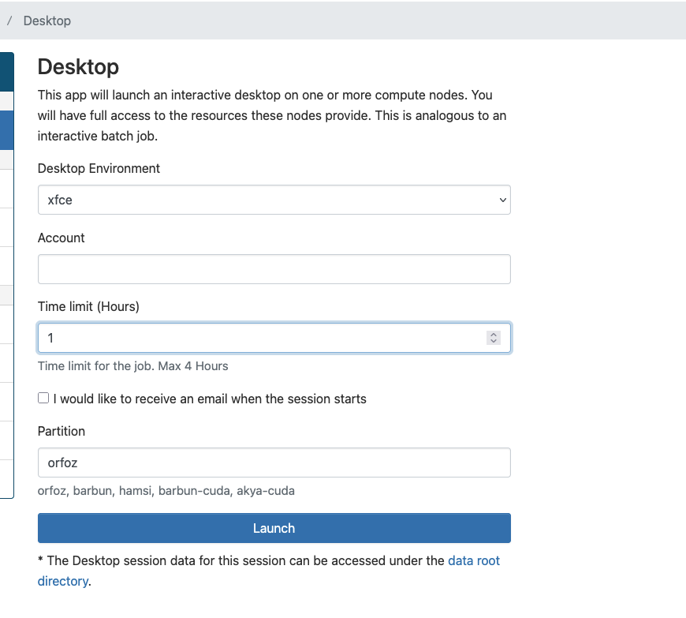

Parallel Computing with MATLAB on TRUBA HPC
Table of Contents
- 1. Introduction
- 2. Prerequisites & Licensing
- 3. Configuring MATLAB to Run on the HPC Cluster (Web Browser via Open OnDemand)
- 4. Configuring MATLAB to Submit Jobs from Local MATLAB to TRUBA
- 5. Configuring Jobs (Scheduler Parameters (Slurm Options))
- 5.1. Understanding Slurm: The Cluster "Booking System"
- 5.2. Slurm Options Exposed by the TRUBA MATLAB Profile
- 5.3. What You Typically Need to Specify
- 5.4. Your First "Hello World Job" (Recommended)
- 5.5. The "Pool + 1" Rule: How Cores are Counted
- 5.6. Partition Policies on TRUBA
- 5.7. CPU and Memory Relationship (Conceptual Model)
- 5.8. Resource Selection Strategy
- 5.9. Monitoring the Job
- 5.10. Fetching and Inspecting Job Results
- 5.11. Modifying or Unsetting Settings
- 5.12. Saving Settings
- 6. Advanced: Interactive Parallel Jobs from MATLAB on the Desktop
- 7. TRUBA MATLAB Helper Functions
- 8. Troubleshooting and Debugging
- 9. EXAMPLES (Cheatsheet)
- 10. A parfor Example (Four Execution Methods)
- 10.1. Why Parallelization Matters
- 10.2. Submitting from a Local MATLAB Session (Cluster Profile)
- 10.3. Running Interactively on TRUBA with
parpool - 10.4. Submitting via a Slurm Batch Script (Recommended HPC Method)
- 10.5. Running MATLAB via Open OnDemand (Interactive Desktop)
- 10.5.1. Step 1: Launch Desktop Session
- 10.5.2. Step 2: Open Terminal
- 10.5.3. Step 3: Load MATLAB Module
- 10.5.4. Step 4: Submit Job Using batch()
- 10.5.5. Step 5: Close MATLAB (Optional)
- 10.5.6. Step 6: Monitor Job from Terminal
- 10.5.7. Step 7: Retrieve Output Without MATLAB
- 10.5.8. Step 8: (Optional) Retrieve Output Later in MATLAB
- 11. Further Reading
1. Introduction
This document describes the configuration and usage of MATLAB on the TRUBA (HPC) infrastructure, including license usage, interactive execution, and batch job submission via Slurm.
This guide is intended for academic users of TRUBA.
1.1. Why use TRUBA for MATLAB?
- Speed: Run heavy simulations faster using high-end CPUs.
- Memory: Handle much larger datasets than a standard laptop can manage.
- Parallel Computing: Run multiple MATLAB "workers" simultaneously to solve problems in a fraction of the time.
1.2. Tested Environment
Note: This documentation was validated under the following environment. Changes in MATLAB versions or Slurm settings may require minor adjustments.
| Component | Version / Value |
|---|---|
| Cluster | TRUBA (arf and cuda) |
| Partitions Tested | debug |
| MATLAB | R2025b |
| License Model | Network Academic (MathWorks) |
| Slurm | 23.02.5-1 |
| OS | Rocky Linux 9 |
| Test Date | 2026-02-18 |
This guide reflects the configuration of TRUBA as of the test date above. Changes in MATLAB versions, Slurm configuration, or license settings may require adjustments.
2. Prerequisites & Licensing
Ensure you have these three requirements ready before proceeding:
- Active TRUBA Account: A valid username and password.
- VPN Connection: OpenVPN must be active to access the cluster.
- Academic Purpose: MATLAB on TRUBA is strictly for academic research. Commercial/corporate use is not permitted.
2.1. Licensing and Policy
TRUBA provides MATLAB under a sponsored Network Academic license.
Important: Only academic MATLAB usage is permitted on TRUBA compute resources.
2.2. What this means in practice
How the license is handled depends on how you choose to work:
- Using Open OnDemand or Batch Mode: If you run MATLAB directly on the TRUBA cluster (via your web browser or a batch script), the license is provided and managed automatically on the cluster side. You do not need to provide your own.
- Using MATLAB on your Personal Computer: If you write code in your local MATLAB and submit jobs to TRUBA using the cluster plugin, your local installation must be an academic license. If you use a commercial or trial license on your laptop, the remote execution will be blocked.
Not sure if your license is Academic?
Open MATLAB on your computer and type license in the Command Window. If you are still unsure, contact your university’s software coordinator or IT department.
3. Configuring MATLAB to Run on the HPC Cluster (Web Browser via Open OnDemand)
This method allows you to use a full graphical MATLAB interface directly in your web browser (Open OnDemand). It is the best choice if you want to work interactively.
Rule: You must launch MATLAB through Open OnDemand. Running MATLAB directly on "login nodes" is strictly prohibited and will be terminated.
3.1. Accessing the ARF Cluster
- Connect to TRUBA OpenVPN.
- Open your browser and go to: https://172.16.6.20
- Log in with your TRUBA username and password.
- From the dashboard, click on Interactive Apps and select Desktop.
For detailed connection instructions on OpenOnDemand usage on TRUBA, refer to: https://docs.truba.gov.tr

Figure 1: Open OnDemand dashboard for ARF cluster
3.2. Starting MATLAB in the Desktop Session
Once your virtual desktop appears in the browser:
- Open a Terminal: Right-click anywhere on the desktop and select Open Terminal Here.
- Load MATLAB: Type the following commands to prepare the environment (we use the latest version by default):
module purge module available | grep -i matlab # to see the available modules installed (we generally keep the latest 4 version of the MATLAB on the cluster module load apps/matlab/r2025b
- Launch MATLAB: Run the command below. We add
-nosplashto make it open faster and remove the startup splash screen.
matlab -nosplash
3.3. Introducing MATLAB to the Cluster
Even though you are on the cluster, MATLAB needs to "discover" its surroundings the first time you run it.
- In the MATLAB Home tab, click Parallel -> Discover Clusters…
- MATLAB will detect the specific compute node you were assigned (e.g.,
orfoz34). - Follow the prompts to finish.

Figure 2: Discover Clusters window showing allocated compute node
What does this step do? This simply tells MATLAB that it is running on a TRUBA compute node. It does not set up long-term job submission (we will do that in the next section).
3.4. Important: The "Validate" Button
If you open the Cluster Profile Manager (Home → Parallel → Cluster Profile Manager), you will see a Validate button.
Do not use the "Validate" button here. On TRUBA, job execution is handled by the Slurm manager, not MATLAB's internal validator. The validation test will likely fail, but this does not mean your MATLAB is broken. As long as you can run commands, your setup is correct.
3.5. Switching Between ARF and CUDA Clusters
TRUBA has two main sections: ARF (Standard) and CUDA (GPU-focused).
- ARF Access: https://172.16.6.20
CUDA Access: https://172.16.6.16 (Requires special authorization)
Access to the CUDA cluster requires authorization. See the official documentation:
https://docs.truba.gov.tr/1-kaynaklar/arf_acc/arf_acc_baglanti.html#arf-acc-baglanti
Your files, settings, and MATLAB preferences are shared between both clusters.
- Settings Folder:
~/.matlab/(This stores your preferences). - Home Directory:
/arf/home/$USER(This is where your files live).
4. Configuring MATLAB to Submit Jobs from Local MATLAB to TRUBA
This section describes how to configure MATLAB installed on your local computer to submit jobs remotely to the TRUBA cluster.
This configuration:
- Is required only if MATLAB is installed on your personal machine.
- Must be performed once per Slurm cluster (e.g., ARF or CUDA).
- Must be repeated for each MATLAB version installed locally.
4.1. Verify Your User Path
MATLAB needs a specific folder to store the TRUBA connection scripts.
- Open MATLAB on your computer.
- Type
userpathin the Command Window. - If it returns a folder, that is where we will put the plugin.
- If it is empty, type
userpath('reset')to fix it.

Figure 3: MATLAB userpath after reset
If necessary, manually create a MATLAB directory under your Documents folder and set it as the user path:
mkdir(fullfile(getenv('HOME'),'Documents','MATLAB'))
userpath(fullfile(getenv('HOME'),'Documents','MATLAB'))
savepath
4.2. Install the TRUBA Cluster Plugin
- Download the TRUBA MATLAB Plugin (ZIP)??????? Add the folder link.
- Extract the files directly into the folder you found in the step above.
In the MATLAB Command Window, run: (This will create a TRUBA cluster profile configured for Slurm submission.)
configCluster
- Follow the prompts: Select the cluster (ARF or CUDA) and enter your TRUBA username.
You won't be asked for a password yet. You will enter your password only when you actually "send" a job to the cluster.

Figure 4: Running configCluster and selecting TRUBA ARF
After successful configuration, jobs submitted from MATLAB will run on the TRUBA cluster instead of the local machine.
You can also see the cluster profile from GUI Home -> Parallel -> Create and Manage Clusters

Figure 5: TRUBA ARF cluster profile visible in Cluster Profile Manager
4.3. Switching Between Your Computer and the Cluster
While TRUBA handles the massive calculations, you will still need to run small, immediate tasks on your own computer's hardware. This is managed through different "Profiles."
4.3.1. Setting Up Your Local Profile
Before you start, ensure you have a "local" profile to handle work on your own laptop.
- Go to the Home tab in MATLAB.
- Click Parallel > Create and Manage Clusters.
- Check the list on the left. If you do not see a profile named Processes or local, click Add Cluster Profile > Processes.
- This ensures you can always switch back to "Laptop mode" when you aren't using the cluster.
Figure 6: TRUBA ARF cluster profile visible in Cluster Profile Manager
4.3.2. How to Switch Profiles in Your Code
You can tell MATLAB where to run your work by using a simple command. This is helpful if you want to test a small part of your code locally before sending the whole thing to TRUBA.
To work on TRUBA (Default):
c = parcluster; % This loads your default TRUBA profile
To work on your own Laptop:
% This tells MATLAB to use your computer's own processors c = parcluster('Processes');
Rookie Tip: Think of the "Processes" profile as your personal workspace and the "TRUBA" profile as the heavy-duty factory. Only send work to the factory when it is too big for your workspace!
5. Configuring Jobs (Scheduler Parameters (Slurm Options))
Before submitting jobs from MATLAB to TRUBA, users are strongly advised to have basic familiarity with Slurm concepts such as partitions, wall time, CPUs, and memory and available partitions.
- Slurm job script fundamentals: https://docs.truba.gov.tr/2-temel_bilgiler/slurm-betik-ozellik.html
- Overview of TRUBA computing clusters / partitions: https://docs.truba.gov.tr/2-temel_bilgiler/hesaplama_kumeleri.html
5.1. Understanding Slurm: The Cluster "Booking System"
Before you send work to TRUBA, you need to understand three basic concepts. Think of it like booking a hotel room:
- Partition: Which "wing" of the building you want to stay in (e.g., standard, luxury, or specialized GPU rooms).
- WallTime: How long you intend to stay. If you stay past checkout, the system will automatically end your session.
- Resources: How many beds (CPUs) and how much space (Memory) you need.
5.1.1. Listing Available Partitions from MATLAB
NOTE: Documentation pages may not always reflect the most up-to-date partition configuration. You can query the available partitions directly from MATLAB using the TRUBA cluster profile.
c = parcluster; clusterPartitionNames(c)
Example output:
{'akya-cuda' }
{'barbun' }
{'barbun-cuda'}
{'debug' }
{'hamsi' }
{'orfoz' }
{'smp' }
5.2. Slurm Options Exposed by the TRUBA MATLAB Profile
To view the current slurm site configuration used by the profile:
c = parcluster; c.AdditionalProperties
5.3. What You Typically Need to Specify
When submitting jobs to TRUBA, you should generally define at least:
- Partition (
c.AdditionalProperties.Partition)- For initial testing, we recommend using
debug.
- For initial testing, we recommend using
- Requested compute size (MATLAB workers)
- When submitting jobs from MATLAB, the size of the job is typically controlled by the pool size (see the minimal test job below).
- Some partitions enforce policies on job size. For example, on
orfozyou may be required to request 56×n (where n is integer) cores.
- Wall time (
c.AdditionalProperties.WallTime)- This is required.
- Keep it short for tests (e.g., 15–2 minutes).
- Maximum wall time depends on partition/site policy.
5.4. Your First "Hello World Job" (Recommended)
This minimal test submits a simple job that returns the working directory (pwd).
It is designed to be small, predictable, and suitable for first-time validation.
We explicitly set:
Partitiontodebug(small jobs are accepted)NumNodesto1(avoid accidental multi-node allocation for a tiny test)WallTimeto a short value
c = parcluster;
% Recommended baseline for a first test
c.AdditionalProperties.Partition = 'debug';
c.AdditionalProperties.NumNodes = 1;
c.AdditionalProperties.WallTime = '0-00:10';
% Submit a pool job (Pool>=2) and disable client-path propagation
j = batch(c, @pwd, 1, {}, ...
'Pool', 2, ...
'CurrentFolder', '.', ...
'AutoAddClientPath', false);
When this job is submitted, MATLAB generates a Slurm submission script. You can see the actual Slurm flags in the submission output.
5.4.1. Understanding the batch Command
The following command submits a job to the TRUBA cluster:
j = batch(c, @pwd, 1, {}, ...
'Pool', 2, ...
'CurrentFolder', '.', ...
'AutoAddClientPath', false);
Explanation of the arguments:
cThe TRUBA cluster profile created earlier.@pwdThe function to execute on the cluster. In this minimal test,pwdsimply returns the working directory.1Number of output arguments expected from the function.{}Cell array of input arguments to the function (empty in this example).'Pool', 2Starts 2 MATLAB workers on the cluster. On TRUBA ARF, independent single-core jobs are not supported, so a pool size of at least 2 is required for this test.'CurrentFolder', '.'Specifies the working directory from which the job is submitted.'AutoAddClientPath', falsePrevents MATLAB from attempting to add local (e.g., macOS/Windows) directories to the cluster workers' search path. This avoids unnecessary warnings.For convenience, the same command can be written in a single line:
Internally, the pool size determines how many parallel worker processes are launched on the cluster.
j = batch(c,@pwd,1,{},'Pool',2,'CurrentFolder','.', 'AutoAddClientPath',false);
- When you run this command you will be asked the password you login to cluster:
Typical submission arguments may look like:
--ntasks=3 --cpus-per-task=1 -N 1 -p debug -t 0-00:10
NOTE:
- On TRUBA ARF, submitting an independent single-core job without a pool may fail
with: "Single core jobs are not supported". For this reason, we use
Poolin the minimal test.
5.5. The "Pool + 1" Rule: How Cores are Counted
This is the most common reason jobs are rejected. On TRUBA, if you ask for a parallel Pool, MATLAB uses one extra CPU to manage the workers.
Total CPUs Used = Pool Size + 1 If you set your Pool to 2, Slurm sees a request for 3 CPUs.
5.5.1. Why does this matter?
Some TRUBA partitions require you to request CPUs in specific "blocks" (multiples). For example, on the orfoz partition, you must request 56xn (where n is integer) cores.
- To use exactly 56 cores, you must set your Pool to 55.
- (55 Workers + 1 Manager = 56 total).
5.6. Partition Policies on TRUBA
TRUBA enforces additional partition-specific job size policies at submission time. These policies are checked automatically by the scheduler. If a job does not comply, Slurm rejects it with an explanatory message.
The key idea is that policies are applied per node:
- Per-node CPU request = (Total requested CPUs) / (NumNodes)
5.6.1. Summary of node sizes (informative)
From scontrol show partition output, the typical CPU core count per node is:
orfoz: 112 CPU cores per nodehamsi: 56 CPU cores per nodebarbun: 40 CPU cores per nodeakya-cuda: 40 CPU cores per nodebarbun-cuda: 40 CPU cores per node
5.6.2. CPU partitions: per-node CPU count rules
orfoz- Requests must be 56×n CPU cores per node (commonly 56 or 112).
- If violated, Slurm may reject the job with a message such as: "Orfoz kuyruguna gonderilen islerde node basina 56/112 cekirdek talep ediniz."
hamsi- Requests must be 56×n CPU cores per node.
barbun- Requests must be 40×n CPU cores per node.
Practical recommendation:
- Use
debugfor small test jobs. - Use the target partition for production jobs and request per-node CPU cores in the allowed multiples.
5.6.3. GPU partitions: GPU request and CPU↔GPU ratio rules
akya-cuda- A GPU request is mandatory.
- CPU cores must be requested in multiples of 10.
- Policy requires 1 GPU per 10 CPU cores per node.
barbun-cuda- A GPU request is mandatory.
- CPU cores must be requested in multiples of 20.
- Policy requires 1 GPU per 20 CPU cores per node.
NOTE: The exact GPU request syntax depends on the submission method. When submitting through the TRUBA MATLAB plugin, GPU requests are set via the cluster profile options (see the GPU example section later in this document).
5.6.4. Working directory policy
TRUBA requires jobs to run from /arf/scratch (recommended).
Jobs submitted from other directories may be rejected by site policy.
For MATLAB submissions, we recommend using:
'CurrentFolder','.'
when MATLAB is started in a directory under /arf/scratch.
5.7. CPU and Memory Relationship (Conceptual Model)
On TRUBA, most partitions follow a memory-per-CPU allocation model.
This means:
- Memory allocation scales with the number of requested CPU cores.
- Requesting more cores results in proportionally more memory.
For example (conceptual):
If a node has:
- 112 CPU cores
- 256 GB RAM
Then approximate memory per core is:
256 / 112 ≈ 2.3 GB per core
If your job requires 100 GB RAM:
100 / 2.3 ≈ 44 cores
Even if your application is not CPU-intensive, you may need to request additional cores to obtain sufficient memory.
5.7.1. Important: Responsible Resource Usage
Although increasing core count increases available memory:
- Do not request excessive cores unnecessarily.
- Choose a partition with higher memory-per-core when appropriate.
For example (based on current TRUBA configuration):
orfoz→ ~2000 MB per CPUhamsi→ ~3400 MB per CPUbarbun→ ~8500 MB per CPU
For memory-heavy workloads, selecting a partition with higher memory per CPU may reduce unnecessary CPU allocation.
5.8. Resource Selection Strategy
Before submitting your job, identify the workload type:
5.8.1. CPU-bound Jobs
- Heavy numerical computation
- Parallel loops
- Linear algebra
→ Increase Pool size appropriately.
→ Match partition core constraints (e.g., 56-core blocks on orfoz).
5.8.2. Memory-bound Jobs
- Large matrices
- Large data loading
- In-memory preprocessing
→ Estimate required memory.
→ Compute approximate cores needed via memory-per-CPU model.
→ Prefer partitions with higher DefMemPerCPU (e.g., barbun).
5.8.3. GPU-bound Jobs
- Deep learning
- CUDA-based computation
→ Use GPU partitions (akya-cuda, barbun-cuda).
→ Ensure GPU-to-CPU ratio follows partition policy.
5.9. Monitoring the Job
After submitting the job, you can monitor its status both from MATLAB and from the TRUBA command line.
5.9.1. From MATLAB
Check the job state:
j.State
Possible states include:
- queued: You are in line.
- running: Calculations are happening.
- finished: Success!
- failed: Check your code for errors.
You can also inspect timing information:
j.SubmitTime j.StartTime j.FinishTime
Instead of checking the state manually over and over, you can tell MATLAB to pause and wait until the job is done.
% This command pauses your MATLAB until the job finishes wait(j)
5.9.2. From the TRUBA Login Node (Slurm)
If you know the Slurm job ID (visible in submission output), you can check:
squeue -u $USER
After completion:
sacct -j <jobid> --format=JobID,State,Elapsed,AllocCPUS,NodeList
5.10. Fetching and Inspecting Job Results
Once the job state becomes 'finished', you can retrieve outputs and inspect logs.
5.10.1. Fetch outputs
out = fetchOutputs(j);
out{1}
NOTE: Outputs are returned as a cell array even if there is a single output.
5.10.2. If the job failed
If j.State is 'failed', inspect the task error message:
j.Tasks(1).Error
Pro Tip: If your job failed, type diary(j). This will print everything the cluster tried to say to the command window, including hidden error messages.
diary(j)
5.10.3. Working with multiple test jobs
If you closed MATLAB and lost the variable j or if you submit multiple jobs and no longer have the variable j,
you can list jobs associated with the cluster profile:
c = parcluster; c.Jobs
To select the most recent job:
j = c.Jobs(end);
Then fetch outputs as usual:
out = fetchOutputs(j);
out{1}
5.10.4. Optional cleanup
To remove a completed job object and associated local metadata:
delete(j)
5.10.5. Deleting All Jobs from the Profile
To remove all stored job objects:
c = parcluster; delete(c.Jobs)
This clears local job metadata stored in the cluster profile's job storage directory.
5.11. Modifying or Unsetting Settings
You can change a value by assigning a new one, for example:
c.AdditionalProperties.WallTime = '0-00:30';
To unset values (return to plugin defaults), use empty/zero/false values, e.g.:
c.AdditionalProperties.Partition = ''; c.AdditionalProperties.NumNodes = 0; c.AdditionalProperties.MemPerCPU = ''; c.AdditionalProperties.RequireExclusiveNode = false;
5.12. Saving Settings
If you want MATLAB to reuse your current configuration in future sessions, save the cluster profile:
c.saveProfile
If you do not save the profile, changes are typically not persistent between MATLAB sessions. If you have not saved the profile and want to revert all changes, simply restart MATLAB.
6. Advanced: Interactive Parallel Jobs from MATLAB on the Desktop
This section describes how to launch a parallel pool on TRUBA directly from MATLAB running on your personal computer.
This workflow is recommended only for advanced users who need interactive development while using cluster resources.
Important: This mode requires proper network configuration between your computer and TRUBA worker nodes.
—
Prerequisites
To run an interactive pool job launched from your desktop onto TRUBA, the following conditions must be satisfied:
- You must be connected to the institutional VPN.
- TCP port 27370 must be open for inbound traffic on your machine.
- MATLAB must advertise your VPN private IP address to worker nodes.
To configure the hostname inside MATLAB:
sethostname
Expected output:
Found private IP address. Setting hostname: 10.x.x.x
This command must be executed every time MATLAB is restarted. Alternatively, add it to your `startup.m` file.
If your firewall blocks communication, you may see an error such as:
"Check whether a firewall is blocking communication between the worker machines and the MATLAB client machine."
—
Starting a Parallel Pool on TRUBA
% Get cluster profile c = parcluster; % Start 28 workers (example) pool = c.parpool(28);
Explanation:
- `parcluster` connects MATLAB to the TRUBA cluster profile.
- `parpool(28)` submits a Slurm job that allocates 28 workers.
- Workers may span multiple nodes depending on scheduler decisions.
The pool remains active until explicitly deleted.
—
6.1. Interactive Parallel Work
Instead of running a local pool on your own computer, your code can now run across multiple nodes on the TRUBA cluster simultaneously.
% Single-line test: Measure time to generate 1,000 numbers and display the sum tic; parfor idx = 1:1000, a(idx) = rand; end; result = sum(a), toc
6.2. Closing the Pool
When you are finished with your parallel tasks, it is a good practice to shut down the pool to free up cluster resources:
delete(gcp('nocreate'))
6.3. TRUBA Resource Constraints (Important)
Desktop-based interactive pools do not bypass TRUBA scheduling rules.
Even when launching pools from MATLAB on your desktop, all TRUBA partition constraints still apply.
The pool creation command internally submits a Slurm job. If resource limits are violated, the job submission will fail.
Common error messages include:
sbatch: error: Orfoz kuyruguna gonderilen isleride node basina 56/112 cekirdek talep ediniz. sbatch: error: Batch job submission failed: Requested time limit is invalid (missing or exceeds some limit)
These errors indicate that your requested configuration does not satisfy partition limits. See the above section for setting these parameters.
Typical causes:
- Requesting more workers than allowed per node
- Exceeding maximum walltime
- Using incorrect partition
- Not specifying required time limit
Before adjusting `parpool(N)`, verify:
- The partition you are using
- Maximum cores allowed per node
- Maximum allowed walltime
- Whether multi-node execution is permitted
Always ensure that:
requested workers ≤ allowed cores per node
If necessary, reduce the pool size or adjust it according to the cluster rules:
pool = c.parpool(56);
or adjust cluster profile settings as documented earlier.
Simple Numerical Example
tic;
R = zeros(1,280);
parfor i = 1:280
R(i) = sum(svd(rand(400)));
end
toc;
mean(R)
Explanation:
- 280 iterations ensure sufficient work per worker.
- Each iteration computes singular values of a random 400x400 matrix.
- `mean(R)` provides numerical output.
- `tic/toc` measures elapsed wall time.
To compare with serial execution:
tic;
for i = 1:280
sum(svd(rand(400)));
end
toc
Parallel execution should show noticeable speedup for sufficiently large workloads.
—
Understanding Overhead
When you call `parpool`, MATLAB:
- Submits a Slurm job
- Allocates nodes
- Starts worker MATLAB processes
- Performs license checks
- Establishes TCP connections
- Synchronizes the environment
This startup phase can take from tens of seconds to several minutes.
If the actual computation is small (e.g., `parfor i=1:10, rand; end`), startup overhead dominates and parallel execution may appear slow.
Parallel computing is beneficial only when:
computation time >> startup and communication overhead
—
Monitoring Jobs
When a pool is active, MATLAB Job Monitor shows:
Description: Interactive pool State: running
This indicates that workers are allocated and idle or ready.
It does NOT necessarily mean that a `parfor` loop is currently executing.
As long as the pool is open, cluster resources remain allocated.
6.4. Opening Job Monitor
To view active pools and cluster jobs, open:
Parallel → Monitor Jobs

Figure 7: Opening the Job Monitor from the MATLAB Parallel menu.
—
6.5. Example: Job Monitor Window

Figure 8: MATLAB Job Monitor showing running and finished jobs.
In this window:
- Description: Interactive pool indicates that a parallel pool is active.
- State: running means that worker processes are allocated.
- This does not necessarily mean that a `parfor` loop is currently executing.
As long as the pool remains open, cluster resources stay allocated.
—
Closing the Pool
Always delete the pool after finishing:
delete(gcp)
Failing to close the pool wastes compute resources.
Idle pools may be terminated automatically after a timeout (currently ~30 minutes of inactivity; subject to change).
—
Best Practice Recommendation
- Use this mode for interactive development only.
- For production runs, use batch submission (`sbatch`).
- If working inside an OnDemand desktop session, prefer a local pool (`parpool('local',N)`) instead of submitting a second cluster job.
7. TRUBA MATLAB Helper Functions
TRUBA provides several helper functions that simplify interaction with Slurm and cluster resources from within MATLAB.
These functions are optional but strongly recommended for advanced usage and troubleshooting.
| Function | Description | Notes |
|---|---|---|
| clusterFeatures | Lists cluster features and node constraints | Useful for understanding partition limits |
| clusterGpuCards | Lists available GPU models on TRUBA | Use before requesting GPU resources |
| clusterPartitionNames | Lists available Slurm partitions/queues | Verify before setting profile |
| fixConnection | Reestablishes cluster connection | Applicable only for Desktop mode |
| seff | Displays Slurm efficiency statistics for a job | Similar to Linux `seff` command |
| willRun | Explains why a job is queued | Helps diagnose scheduling issues |
—
Example Usage
clusterPartitionNames
Lists available TRUBA partitions.
clusterFeatures
Displays node-level constraints such as maximum cores per node.
seff(326528)
Displays efficiency statistics for the given Slurm job ID.
willRun(326528)
Explains why a job is currently queued.
fixConnection
Useful after reconnecting to VPN if desktop pools fail.
8. Troubleshooting and Debugging
When a job fails or behaves unexpectedly, MATLAB provides tools to retrieve log files and scheduler information.
—
Retrieving Debug Logs
If a serial or batch job produces an error, use the `getDebugLog` method to view the error log.
For independent jobs (multiple tasks):
c.getDebugLog(job.Tasks)
For pool jobs:
c.getDebugLog(job)
The debug log contains detailed error messages generated by MATLAB workers on TRUBA.
—
Retrieving Scheduler Job ID
Cluster administrators may request the Slurm job ID for troubleshooting purposes.
You can obtain the scheduler ID by calling:
job.getTaskSchedulerIDs()
Example output:
ans =
25539
This number corresponds to the Slurm job ID visible via `squeue` or `sacct` on TRUBA.
8.1. Licensing Issues
MATLAB jobs running on TRUBA require valid licenses for:
- MATLAB
- Parallel Computing Toolbox (for pool jobs / parpool / batch with Pool)
Symptoms of licensing problems may include:
- Job fails immediately after submission
- Workers cannot start
- parpool hangs or reports license checkout failures
8.1.1. Check license availability (local MATLAB)
license('test','Distrib_Computing_Toolbox')
Return value:
- 1 -> toolbox license available
- 0 -> not available
license('inuse')
8.1.2. Check license status on TRUBA (if permitted)
lmstat -a
If you cannot access license tools on TRUBA, include the Slurm job ID and job debug logs when contacting TRUBA support (see: Retrieving Debug Logs / Retrieving Scheduler Job ID).
9. EXAMPLES (Cheatsheet)
You tell MATLAB how to "book" your resources using the AdditionalProperties command. Here is the minimal set you should always define:
# set partition name c.AdditionalProperties.Partition = 'debug'; # set time limit c.AdditionalProperties.WallTime = '0-00:10'; % Format is days-hours:minutes # set node count c.AdditionalProperties.NumNodes = 1; % For most beginners, starting with 1 node is best.
9.1. What Happens After You Submit a Job?
After submission, the job enters the Slurm queue. The start time depends on:
- Current cluster load
- Partition priority
- Requested resources (nodes, GPUs, walltime)
The job may remain in queued state for some time before running.
9.1.1. You Can Close MATLAB
Once the job is submitted:
- You may close MATLAB.
- You may shut down your desktop session.
- The job continues to run on TRUBA.
To check the job later:
c = parcluster; c.Jobs
Or from the login node:
squeue -u $USER
9.2. Example: Running on the orfoz Partition (56-core half-node)
On orfoz, TRUBA enforces a per-node CPU policy: jobs must request
56 or 112 CPU cores per node.
IMPORTANT: For MATLAB pool jobs, the Slurm plugin requests:
Total Slurm tasks = Pool + 1
(The extra 1 task is used for job orchestration.)
Therefore, to request 56 cores per node on orfoz, you must set:
Pool = 55→ Slurm submits--ntasks=56
9.2.1. Correct example (half node on orfoz)
c = parcluster;
c.AdditionalProperties.Partition = 'orfoz';
c.AdditionalProperties.NumNodes = 1;
c.AdditionalProperties.WallTime = '0-00:30';
j = batch(c, @pwd, 1, {}, ...
'Pool', 55, ...
'CurrentFolder', '.', ...
'AutoAddClientPath', false);
IMPORTANT:
On partitions with per-node core policies (e.g., orfoz), always set:
c.AdditionalProperties.NumNodes
If NumNodes is left unset, Slurm may place the job in a way that violates per-node policies.
For a half-node job on orfoz, use:
NumNodes = 1Pool = 55(because MATLAB requestsPool+1tasks → 56 total)
9.2.2. Common mistake (will be rejected)
If you use Pool=56, MATLAB will submit --ntasks=57, and Slurm rejects it:
sbatch: error: Orfoz kuyruguna gonderilen islerde node basina 56/112 cekirdek talep ediniz.
9.2.3. Slurm Command Generated by MATLAB
When you submit the job, MATLAB prints the exact Slurm arguments used for submission:
Submit arguments: --ntasks=55 --cpus-per-task=1 -D /arf/scratch/$USER \ --ntasks-per-core=1 -t 0-3:00 -C orfoz -N 1 -p orfoz
This shows how MATLAB parameters map to Slurm options:
Pool→ total tasks (–ntasks)NumNodes→ -NPartition→ -pConstraint→ -CWallTime→ -t
9.3. Example: Submitting a GPU Job (barbun-cuda)
This section shows a minimal GPU test job submission from MATLAB to TRUBA.
9.3.1. Key policy on barbun-cuda
TRUBA enforces CPU↔GPU request rules on GPU partitions.
On barbun-cuda:
- A GPU request is mandatory.
- CPU cores per node must be requested in multiples of 20.
- Policy requires 1 GPU per 20 CPU cores per node.
Since MATLAB pool jobs submit an extra orchestration task, the Slurm plugin typically requests:
Total Slurm tasks = Pool + 1
This matters when matching the required CPU counts.
9.3.2. Hardware note
The barbun-cuda nodes provide 2 GPUs per node.
A common valid request for one node is therefore:
- 2 GPUs per node
- 40 CPU cores per node
9.3.3. Minimal valid GPU test job (2 GPUs, 40 CPUs on 1 node)
Configure the cluster profile:
c = parcluster; % Target partition c.AdditionalProperties.Partition = 'barbun-cuda'; % Request 1 node for the test c.AdditionalProperties.NumNodes = 1; % Set a short walltime for testing c.AdditionalProperties.WallTime = '0-00:30'; % Request 2 GPUs on the node c.AdditionalProperties.GPUsPerNode = 2;
Submit a minimal job.
To satisfy the 40-CPU requirement on one node, set:
Pool = 39→ Slurm submits--ntasks=40
j = batch(c, @gpuDeviceCount, 1, {}, ...
'Pool', 39, ...
'CurrentFolder', '.', ...
'AutoAddClientPath', false);
Fetch and inspect results:
wait(j);
out = fetchOutputs(j);
out{1}
Expected output is the number of GPUs visible to the worker (typically 2).
9.3.4. Slurm command generated by MATLAB
When submitting, MATLAB prints the Slurm arguments used by the plugin. A successful submission should include:
-p barbun-cuda-N 1--ntasks=40- a GPU request (gres / TRES)
Submit arguments: --ntasks=40 --cpus-per-task=1 -D /arf/scratch/$USER --ntasks-per-core=1 -t 0-00:30 --gres=gpu:2 -N 1 -p barbun-cuda
Use this output to verify that the request matches TRUBA policy (e.g., CPUs and GPUs requested per node).
9.3.5. Common mistakes (and what happens)
- Missing GPU request
If you submit to
barbun-cudawithout requesting a GPU, Slurm will reject the job.Typical message:
barbn-cuda kuyruguna sadece GPU talebi olan isler gonderilebilir.
- CPU/GPU mismatch
If you request 2 GPUs but do not request 40 CPUs per node (multiples of 20 per GPU), Slurm will reject the job.
Examples that are likely to fail:
- Too few CPUs for 2 GPUs (e.g., 20 CPUs with 2 GPUs)
- CPU count not a multiple of 20
9.3.6. Tips
- Start GPU tests with short walltime and 1 node.
- Keep your working directory under
/arf/scratch. - If you see a policy-related rejection, first check:
PartitionNumNodesGPUsPerNodePool(rememberPool + 1tasks)
10. A parfor Example (Four Execution Methods)
In this section, we demonstrate the same parfor example using four different
execution methods:
- Submitting from a local MATLAB session configured with the TRUBA cluster profile
- Running interactively on TRUBA with
parpool - Submitting via a Slurm batch script
- Submitting via Open OnDemand
The test function used in all cases is shown below.
function t = parfor_demo()
% Simple parfor timing demo (runs on workers)
N = 55;
tic
parfor i = 1:N
pause(1);
end
t = toc;
fprintf("parfor_demo: N=%d, elapsed=%.2f s\n", N, t);
end
We use the orfoz partition with 56 cores per node. Since MATLAB’s Slurm
integration uses one orchestration task in addition to the worker pool,
we set:
Pool = 55NumNodes = 1
so that the total requested tasks become 56.
10.1. Why Parallelization Matters
Each iteration takes approximately one second (pause(1)).
With N = 55, a serial loop would take approximately:
55 iterations × 1 second ≈ 55 seconds
When using parfor with a pool of 55 workers, all iterations are dispatched
concurrently in a single execution wave. The theoretical minimum runtime is:
≈ 1 second
In practice, the measured runtime is slightly higher (e.g., around 1.8–2.0 seconds) due to parallel overhead, including:
- Task scheduling
- Worker communication
- Synchronization barriers
- System-level latency
Even with this overhead, the wall-clock time decreases from nearly one minute to just a few seconds. This confirms that the allocated CPU cores are actively utilized instead of remaining idle.
10.2. Submitting from a Local MATLAB Session (Cluster Profile)
10.2.1. File Location and Execution Model
When MATLAB runs on a local machine using a TRUBA cluster profile,
the .m file does not need to be manually copied to TRUBA.
During job submission, MATLAB:
- Packages the required function files
- Transfers them to TRUBA
- Submits the job to Slurm
- Executes the job on compute nodes
The file must be located in the current working directory or on the MATLAB path so that it can be staged correctly.
Once submitted, the job runs entirely on TRUBA compute nodes, and the parallel workers execute on the allocated resources.
10.2.2. Cluster Configuration
c = parcluster; c.AdditionalProperties.Partition = 'orfoz'; c.AdditionalProperties.NumNodes = 1; c.AdditionalProperties.WallTime = '0-00:30';
10.2.3. Job Submission
j = batch(c, @parfor_demo, 1, {}, ...
'Pool', 55, ...
'CurrentFolder'1, '.', ...
'AutoAddClientPath', false);
10.2.4. Job Submission (File Already Exists on TRUBA)
If the script already exists on TRUBA (for example at:
/arf/scratch/sbilmis/parfor_demo.m
and you are submitting from a local MATLAB session configured with the TRUBA cluster profile, you do NOT change your local working directory to /arf/scratch.
Instead, you specify the remote execution directory using
CurrentFolder.
j = batch(c, @parfor_demo, 1, {}, ...
'Pool', 55, ...
'CurrentFolder', '/arf/scratch/sbilmis', ...
'AutoAddClientPath', false);
Explanation:
@parfor_demorefers to the function name (parfor_demo.m).- The file must already exist in the specified remote directory.
CurrentFoldertells TRUBA where to execute the job.AutoAddClientPath = falseprevents MATLAB from trying to stage local files to the cluster.Pool = 55results in 56 Slurm tasks (55 workers + 1 client).
In this mode, no file transfer occurs. MATLAB simply instructs Slurm to execute the script directly from the shared TRUBA filesystem.
10.2.5. Retrieve Output
wait(j); diary(j) % shows printed text (including elapsed time) t = fetchOutputs(j); delete(j);
The following screenshot shows the Slurm submission arguments and the measured execution time:

Figure 9: Slurm submission arguments and parfor execution time on orfoz (55 workers).
This runtime confirms that 55 CPU cores were actively utilized instead of remaining idle.
10.2.6. Job Submission (File Already Exists on TRUBA)
If the script already exists on TRUBA (for example at:
/arf/scratch/sbilmis/parfor_demo.m
and you are submitting from a local MATLAB session configured with the TRUBA cluster profile, you do NOT change your local working directory to /arf/scratch.
Instead, you specify the remote execution directory using
CurrentFolder.
j = batch(c, @parfor_demo_on_arf, 1, {}, ...
'Pool', 55, ...
'CurrentFolder', '/arf/scratch/sbilmis', ...
'AutoAddClientPath', false);
Explanation:
@parfor_demorefers to the function name (parfor_demo.m).- The file must already exist in the specified remote directory.
CurrentFoldertells TRUBA where to execute the job.AutoAddClientPath = falseprevents MATLAB from trying to stage local files to the cluster.Pool = 55results in 56 Slurm tasks (55 workers + 1 client).
In this mode, no file transfer occurs. MATLAB simply instructs Slurm to execute the script directly from the shared TRUBA filesystem.
# Here is the output: Submit arguments: --ntasks=56 --cpus-per-task=1 -D /arf/scratch/$USER --ntasks-per-core=1 -t 0-00:30 -N 1 -p orfoz >> j.wait; >> j.diary --- Start Diary --- parfor_demo: N=55, elapsed=1.85 s --- End Diary ---
10.3. Running Interactively on TRUBA with parpool
In this method, you start a parallel pool interactively and then run the
same parfor_demo function as usual. The pool workers are started on TRUBA
compute nodes through Slurm.
% Get a handle to the cluster profile c = parcluster; % Target the orfoz partition (56 cores per node policy) c.AdditionalProperties.Partition = 'orfoz'; c.AdditionalProperties.NumNodes = 1; c.AdditionalProperties.WallTime = '0-00:30';
10.3.1. Set the client hostname (recommended)
Before creating the pool, set the client hostname. This helps MATLAB workers connect back to your client process reliably (especially in environments with multiple network interfaces).
sethostname
10.3.2. Create the cluster pool
For a half-node job on orfoz, request a 56-task allocation and start a pool
with 56 workers.
pool = parpool(c, 56)
Show the screenshot here.

Figure 10: Creating a cluster-backed parallel pool on orfoz.
At this point, a Slurm job is submitted in the background and the pool becomes available. After the pool is connected, you can run your code exactly as if you were working in a regular MATLAB session.
10.3.3. Run the demo code
parfor_demo
Show the screenshot here.

Figure 11: Running parfor_demo using the active cluster pool.
10.3.4. Close the pool (release resources)
When you are finished, delete the pool to release the Slurm allocation and compute resources.
delete(pool) % equivalent to: pool.delete
10.4. Submitting via a Slurm Batch Script (Recommended HPC Method)
This method runs MATLAB entirely inside a Slurm allocation. Slurm allocates the CPU resources, and MATLAB creates a local parallel pool that uses those allocated cores.
This is the most robust and recommended approach for production workloads.
10.4.1. MATLAB Script (run_parfor.m)
Create the following file in your working directory:
% run_parfor.m
% Read number of workers from environment variable
n = str2double(getenv("NUM_WORKERS"));
% Start a local parallel pool using allocated CPUs
parpool('local', n);
% Run the demo function
parfor_demo();
% Clean up the pool
delete(gcp('nocreate'));
Explanation:
NUM_WORKERSis passed from Slurm.parpool('local', n)starts workers using the CPUs already allocated.- No Slurm plugin or cluster profile is used.
- The pool is deleted at the end to release resources cleanly.
10.4.2. Slurm Script (submit_parfor.sh)
#!/bin/bash #SBATCH -J matlab-parfor #SBATCH -A sbilmis #SBATCH -p orfoz #SBATCH -N 1 #SBATCH --ntasks=56 #SBATCH --cpus-per-task=1 #SBATCH -t 0-00:30 #SBATCH -o matlab-parfor_%j.out #SBATCH -e matlab-parfor_%j.err module load apps/matlab/r2025b # Use one task for MATLAB client, remaining for workers export NUM_WORKERS=$((SLURM_NTASKS - 1)) matlab -batch "run('run_parfor.m')"
Key points:
--ntasks=56reserves 56 CPU cores onorfoz.- One core runs the main MATLAB process.
- 55 cores are used as parallel workers.
NUM_WORKERSis computed automatically fromSLURM_NTASKS.- If
--ntaskschanges, worker count adjusts automatically.
10.4.3. Submitting the Job
sbatch submit_parfor.sh
Monitor job status:
squeue -u sbilmis
10.4.4. Output File
After completion, inspect:
cat matlab-parfor_<jobid>.out
Example output:
Sponsored License -- for use in support of a program or activity sponsored by MathWorks. Not for government, commercial or other non-sponsored organizational use. Starting parallel pool (parpool) using the 'Processes' profile ... Connected to parallel pool with 55 workers. parfor_demo: N=55, elapsed=1.29 s Parallel pool using the 'Processes' profile is shutting down.
10.5. Running MATLAB via Open OnDemand (Interactive Desktop)
Open OnDemand allows users to launch a graphical desktop session on TRUBA compute nodes through a web browser. This is equivalent to running an interactive Slurm job.
In this mode, Slurm allocates the resources first, and MATLAB runs inside that allocation.
—
10.5.1. Step 1: Launch Desktop Session
- Log in to Open OnDemand.
- Select Interactive Apps → Desktop.
- Choose the following parameters:
- Desktop Environment: xfce
- Partition: orfoz
- Time limit: 1 hour
- Account: sbilmis
- Click Launch.

Figure 12: Open OnDemand Desktop launch configuration (orfoz partition).
—
10.5.2. Step 2: Open Terminal
Once the desktop loads:
- Right-click on the desktop
- Select Open Terminal Here
Figure 13: Opening a terminal inside the interactive desktop session.
—
10.5.3. Step 3: Load MATLAB Module
In the terminal:
module purge module load apps/matlab/r2025b matlab

Figure 14: Loading MATLAB module inside Open OnDemand desktop.
—
10.5.4. Step 4: Submit Job Using batch()
Instead of running parpool interactively, we submit the job
using the TRUBA cluster profile. This allows the job to continue
running even after MATLAB is closed.
Inside the MATLAB command window:
c = parcluster;
c.AdditionalProperties.Partition = 'orfoz';
c.AdditionalProperties.NumNodes = 1;
c.AdditionalProperties.WallTime = '0-00:30';
j = batch(c, @parfor_demo, 1, {}, ...
'Pool', 55, ...
'CurrentFolder', '/arf/scratch/sbilmis', ...
'AutoAddClientPath', false);
# or one line
j = batch(c, @parfor_demo, 1, {}, 'Pool', 55, 'CurrentFolder', '/arf/scratch/sbilmis', 'AutoAddClientPath', false);
Explanation:
Pool = 55results in 56 Slurm tasks (55 workers + 1 client).CurrentFolderspecifies where the function exists on TRUBA.- The job is now managed entirely by Slurm.
- You may safely close MATLAB after submission.

Figure 15: Submitting parfor_demo using batch() inside Open OnDemand.
—
10.5.5. Step 5: Close MATLAB (Optional)
After submission, you may close MATLAB and even close the Open OnDemand desktop session.
The job continues running on TRUBA.
—
10.5.6. Step 6: Monitor Job from Terminal
From any login node:
squeue -u sbilmis
To check detailed job information:
scontrol show job <jobid>

Figure 16: Monitoring submitted MATLAB job via squeue.
—
10.5.7. Step 7: Retrieve Output Without MATLAB
Cluster profile jobs store results under:
/arf/home/sbilmis/.matlab/generic_cluster_jobs/truba/
List jobs:
ls /arf/home/sbilmis/.matlab/generic_cluster_jobs/truba/
Each job has a folder:
Job1/ Job2/ Job3/
To read printed output (diary):
cat /arf/home/sbilmis/.matlab/generic_cluster_jobs/truba/JobX/diary
Example output:
parfor_demo: N=55, elapsed=1.83 s
📘 sbilmis@arf-ui1 ~$ grep "parfor_demo:" ~/.matlab/generic_cluster_jobs/truba/Job3/Task*.diary.txt /arf/home/sbilmis/.matlab/generic_cluster_jobs/truba/Job3/Task1.diary.txt:parfor_demo: N=55, elapsed=1.89 s
—
10.5.8. Step 8: (Optional) Retrieve Output Later in MATLAB
If you reopen MATLAB later, you can recover the job object:
c = parcluster; jobs = c.Jobs; j = jobs(end); t = fetchOutputs(j);
This allows retrieval of returned variables without rerunning the job.
11. Further Reading
To learn more about MATLAB Parallel Computing Toolbox, the following official MathWorks resources may be helpful:
- Parallel Computing Overview
- Parallel Computing Documentation
- Parallel Computing Coding Examples
- Parallel Computing Tutorials
- Parallel Computing Videos
- Parallel Computing Webinars
These resources cover general usage of parallel computing within MATLAB and are not specific to TRUBA cluster configuration.